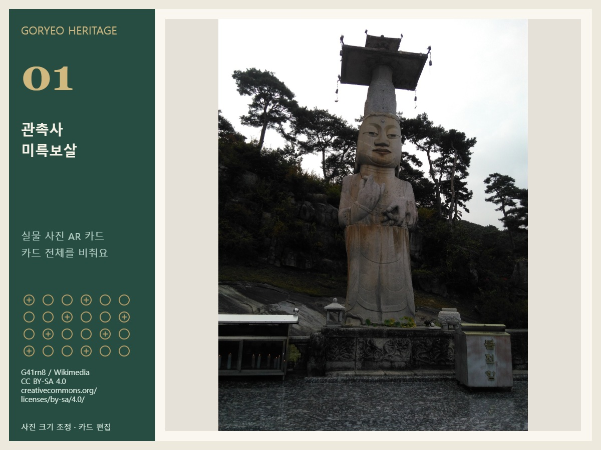
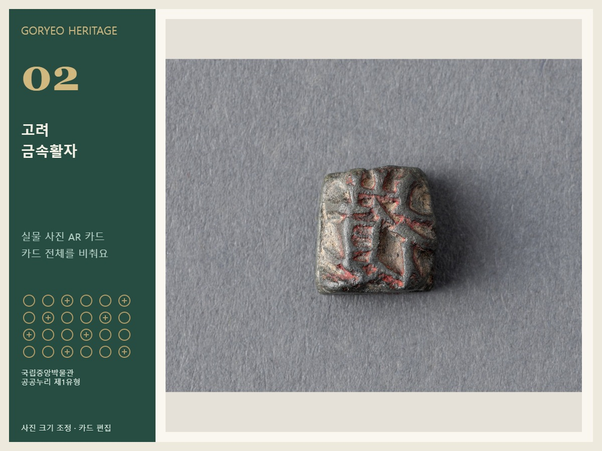
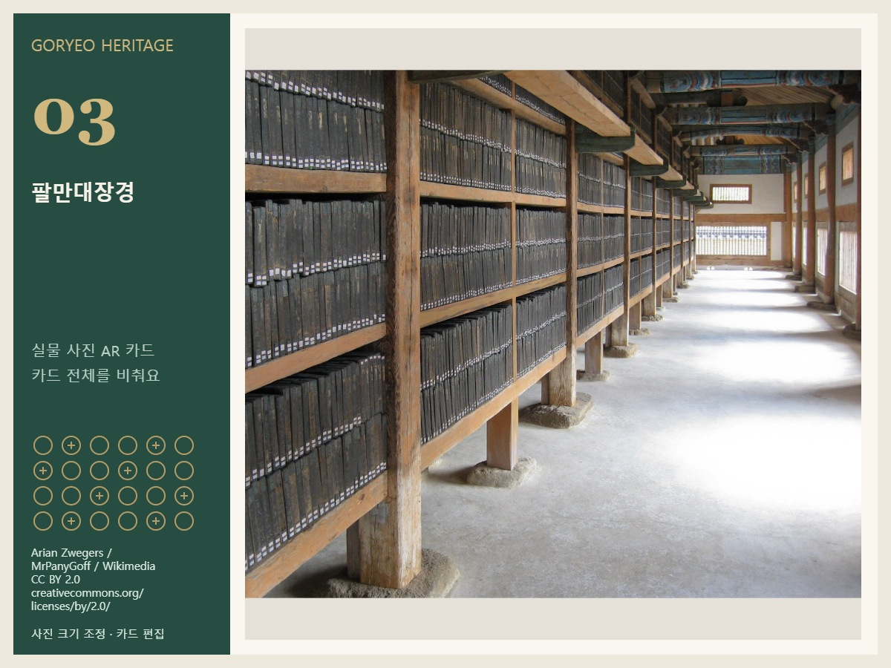
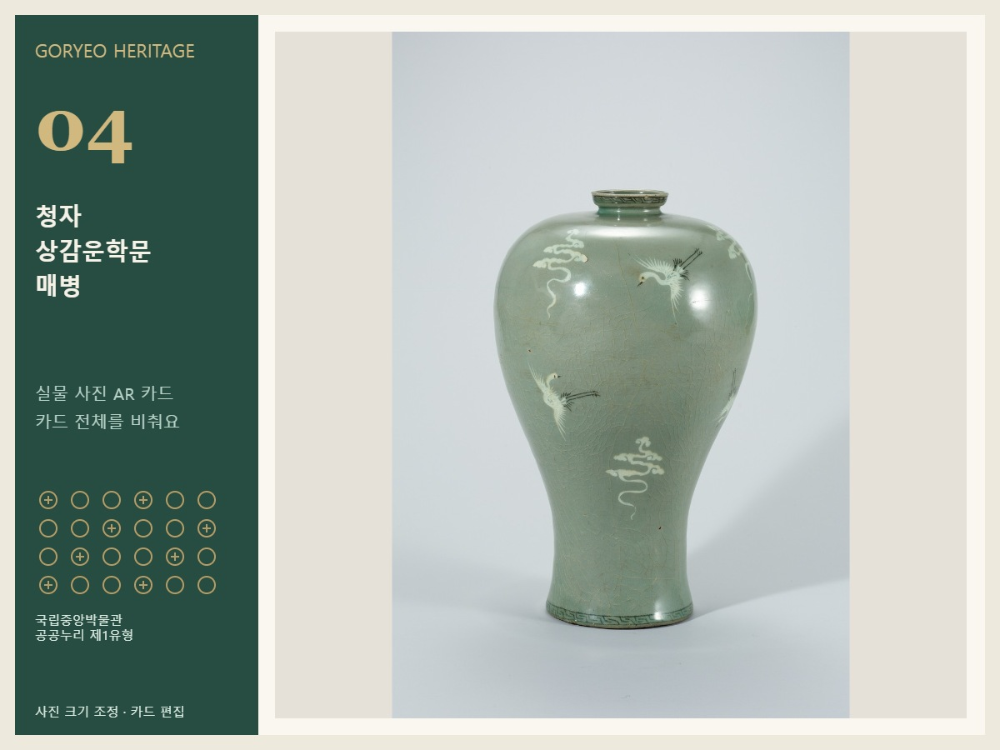
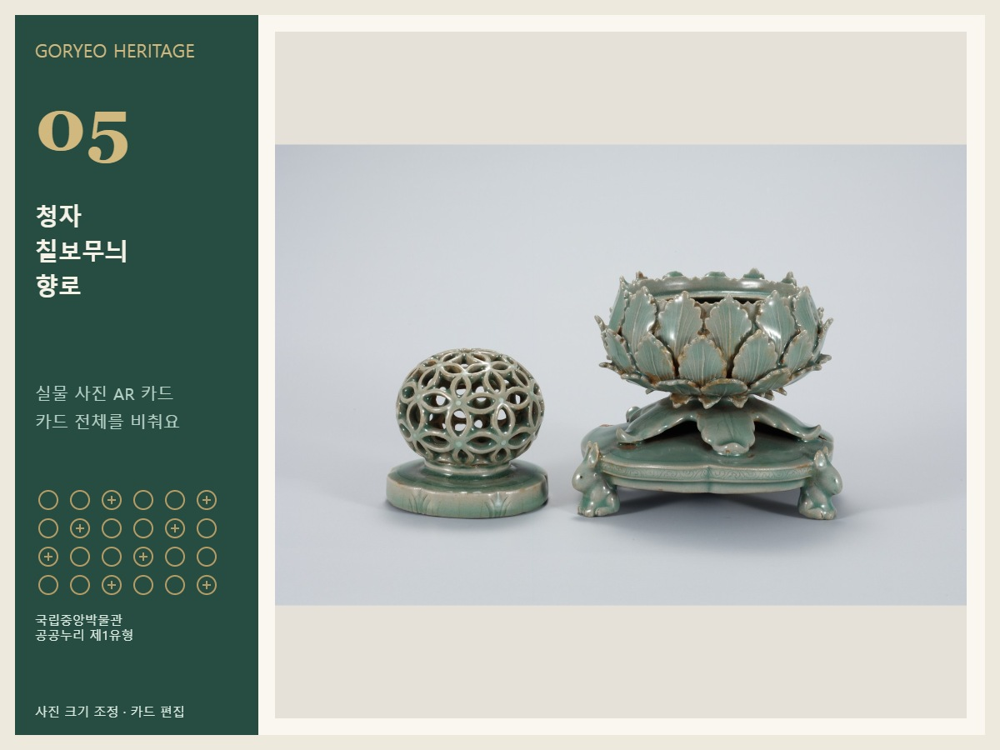
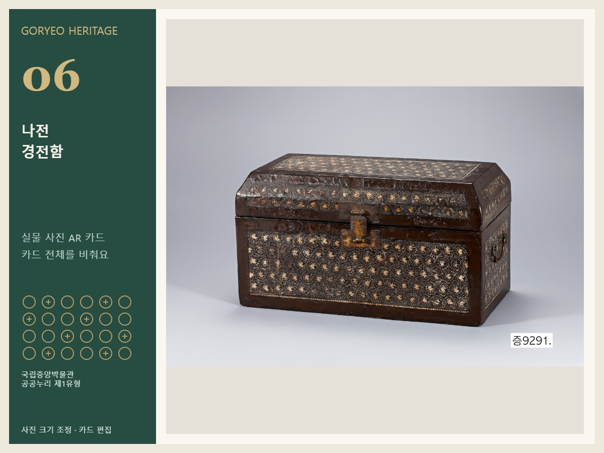

관촉사 미륵보살
카드 전체가 보이도록 카메라를 비춰 주세요.

고려 금속활자
카드 전체가 보이도록 카메라를 비춰 주세요.

팔만대장경
카드 전체가 보이도록 카메라를 비춰 주세요.

청자 상감운학문 매병
카드 전체가 보이도록 카메라를 비춰 주세요.

청자 칠보무늬 향로
카드 전체가 보이도록 카메라를 비춰 주세요.

나전 경전함
카드 전체가 보이도록 카메라를 비춰 주세요.
